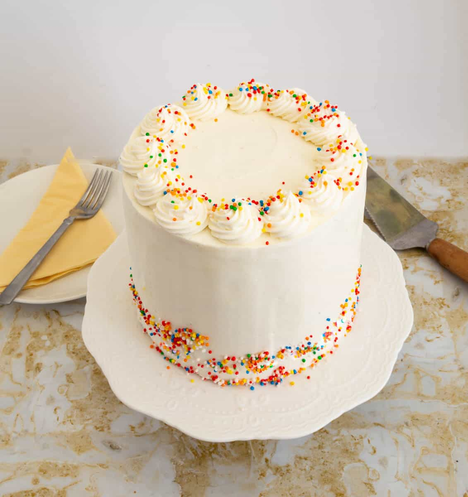

A soft, fluffy, and delicious homemade vanilla cake perfect for any occasion
Prep Time: 20 minutes
Cooking Time: 30 minutesServing: 8
Difficulty: EasyThis is a simple and delicious vanilla cake recipe that's perfect for beginners.

Do not overmixthe batter to keep the cake soft
You can add chocolate chips for extra flavor
Visit this recipe source:Simple White Cake Recipe